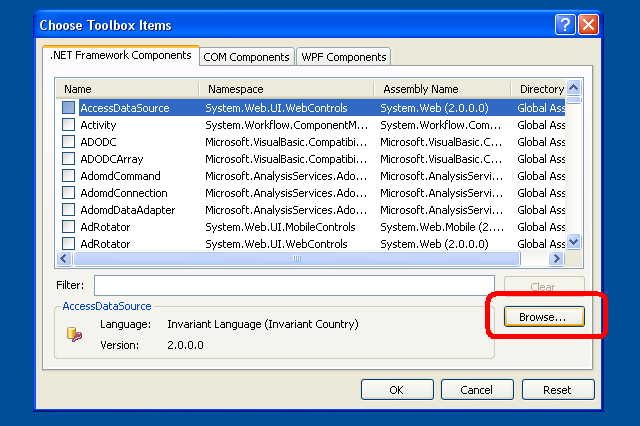
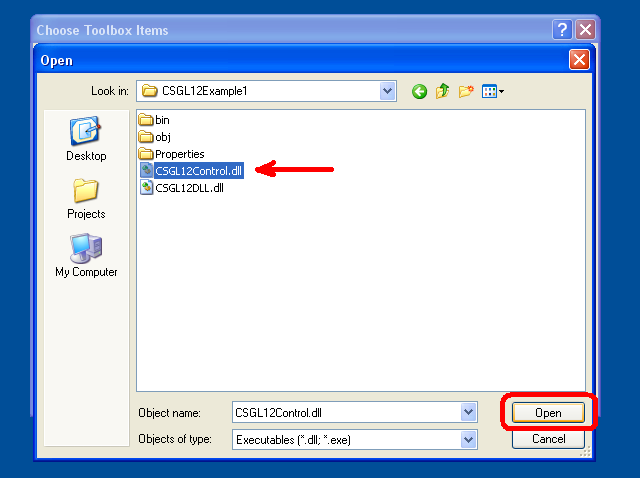

C# OpenGL interface
Windows pour le système d'exploitation
Colin Fahey

CSGL12Control sur un Form, montrant une « fractale de » pixel shader et de programme GDI+ dessin copié sur une texture

Deux cas CSGL12Control sur un Form, en montrant les programmes de pixel shader et de textures

Un avatar 3D qui erre dans le bureau et peut être déplacé à l'aide du curseur
1. Logiciels
Cette version de ce document ne doit être incluse avec le logiciel « CSGL12 ». Si vous ne trouvez pas le logiciel, puis s'il vous plaît aller au site Web suivant pour télécharger le logiciel:
http://colinfahey.com.
2. Tous les C# code dans l'ordinateur C# OpenGL interface (CSGL12) est dans le « domaine public »
J'ai écrit tous les C# code informatique au sein de la C# OpenGL interface (CSGL12).
Je déclare toutes les C# code informatique dans le C# OpenGL interface (CSGL12) d'être dans le « domaine public. »
Par conséquent, l'ordinateur peut-être utilisé pour n'importe quel but (commercial ou privé), sans paiement, sans restrictions, sans obligations, et sans la reconnaissance de l'auteur original.
Le code peut être modifié ou réutilisé portions, sans restrictions et sans obligations, et sans la reconnaissance de l'auteur original.
L'exemple des programmes comprennent une petite quantité de code informatique (en particulier, « shader code informatique) écrits par d'autres personnes. » Ce code n'est pas dans l'interface elle-même et peuvent être trivialement enlevé. Ce code est simplement de montrer la simplicité de l'utilisation de l'interface pour créer et utiliser « shader » programmes.
3. Introduction
« CSGL12 » est une collection de fichiers de code C# ordinateur qui implémente une interface pour la bibliothèque graphique OpenGL (y compris toutes les extensions de OpenGL jusqu'à l'an 2007) pour le système d'exploitation Windows.
Le C# ordinateur dans les fichiers de code « CSGL12 » collection font qu'il est facile d'ajouter OpenGL dessin à tout C# / .NET logiciel avec un « Form » (une instance de « System.Windows.Forms.Form »).
La collecte de l'ordinateur « CSGL12 » fichiers de code comprend un fichier nommé « CSGL12Control.cs », qui définit une classe nommée « CSGL12Control », dérivées de « System.Windows.Forms.Control ». Chaque instance de « CSGL12Control » représente un OpenGL zone de dessin. Il est très facile d'ajouter plusieurs instances du CSGL12Control à un Form (une instance de System.Windows.Forms.Form).
4. Caractéristiques et exigences de « CSGL12 »
Le code est uniquement pour les systèmes d'exploitation Windows qui soutiennent la .NET 2.0 Framework (Windows 2000, Windows XP, Windows Vista, Windows 7)
Le code peut être compilé en utilisant « Microsoft Visual C# 2008 Express Edition » (un compilateur libre), ou similaire C# compilateurs.
Le code exige d'être construit avec l'option de construire « [X] Allow unsafe code » choisi de manière à optimiser les fonctions de copier les données d'image peut être utilisée. Si vous êtes un expert C# programmeur, vous serez en mesure d'identifier aisément les parties du code C# qui exigent de l'option « unsafe » et de les désactiver si souhaité ou requis. Copier les données d'image est 10 fois plus vite avec un code « unsafe » que les autres, et c'est la raison pour laquelle ce code est utilisé. Si vous construisez une DLL qui contient tous les « unsafe » code, puis un projet qui utilise DLL qui ne nécessite pas la construction de la « unsafe » option, et vous pouvez donc en déduire que l'absence de l'option « unsafe » à un projet n'implique pas extra sécurité (DLL parce que de nombreux dossiers qui sont utilisés implicitement ou explicitement par le programme contenant le code « dangereux). »
Le code peut être compilé et utilisé par l'un des éléments suivants:
Microsoft Visual C# 2008 Express Edition
Microsoft Visual Studio 2008
Microsoft .NET 3.5 SDK
SharpDevelop
Mono Project
Le code offre la plupart des extensions OpenGL (par le biais de l'année 2007), y compris « vertex shaders » et « pixel shaders ».
Le code prévoit 1570 les fonctions liées à la OpenGL:
336 GL functions
51 GLU functions
19 WGL functions
1164 extensions
Le code propose des variantes alternatives de la 1570 fonctions avec des paramètres différents types, pour plus de commodité.
Le code définit plus de 3244 constantes pour OpenGL.
Le code permet d'avoir de multiples contextes OpenGL dessin, l'animation de tous de façon indépendante, sur toute « Form ».
En cliquant sur un « CSGL12Control » lui donne « d'entrée se concentrer, » permettant ultérieurement le clavier et la molette de la souris d'entrée. Curseur de clics et les mouvements sont reçus lorsque le curseur est dans la zone rectangulaire d'une instance de « CSGL12Control ».
Le code des fonctions de montrer comment faire certaines tâches communes OpenGL dans C# et .NET.
Le code énumère toutes OpenGL constantes et fonctions dans l'ordre alphabétique dans « class GL » dans « GL.cs », ce qui le rend facile de déterminer si une constante ou une fonction est absente (ce qui est improbable, sauf pour les extensions adoptées après l'année 2007).
Les programmes d'exemple pour montrer comment faire GDI+ l'élaboration d'un Bitmap, puis la copie que Bitmap à un OpenGL texture.
Ce texte permet aux autres et GDI+ dessin des capacités pour contribuer à une OpenGL scène.
Le GDI+ Bitmap peut être mise à jour et mis à OpenGL une texture aussi souvent que une fois par OpenGL cadre.
Les programmes d'exemple pour montrer comment choisir, parmi plusieurs « pixel shader programs » alors que le programme est en cours d'exécution.
Les programmes d'exemple pour montrer comment écrire OpenGL tampons pour les fichiers image (JPG, BMP, GIF, PNG).
Presse Shift + 0 (shift-zéro) pour écrire l'OpenGL tampon pour les fichiers image.
L'exemple de code montre comment compiler « GL.cs » dans un DLL fichier, puis en ajoutant que DLL fichier à un autre projet, peut empêcher la Microsoft code éditeurs (par exemple, Microsoft Visual C# 2008 Express Edition, etc) avec « IntelliSense » (sensibles au contexte de complétion de code) de plus en souvent et persistante ne répond pas (à plusieurs reprises pour la pause de plusieurs secondes, ce qui rend totalement inutilisable l'éditeur). Ayant « GL.cs » le fichier directement dans un projet en cours d'édition par un éditeur de code Microsoft n'est pas pratique, sauf si une personne est prête à subir la lenteur de l'éditeur. Ce problème a touché Microsoft Visual Studio 2003, 2005, 2008, et vont probablement affecter la version 2010 aussi.
L'exemple de code illustre l'utilisation de plusieurs instances de « CSGL12Control » sur un « Form ».
L'exemple de code comprend le code pour faire un « avatar » 3D qui erre dans le bureau de Windows.
5. Exemple de programmes inclus dans « CSGL12 »
5.1 « CSGL12DLL »
Le projet nommé « CSGL12DLL » produit un DLL fichier nommé « CSGL12DLL.dll » qui contient « class GL » (définis dans la C# fichier « GL.cs »).
Mettre « class GL » à une DLL fichier, puis en utilisant DLL que dans d'autres projets qui utilisent « class GL », permet d'éviter un problème avec l'extrême Microsoft tous les éditeurs de code avec la fonctionnalité IntelliSense. Utilisation de la C# fichier GL.cs directement à un projet affecterait Microsoft éditeur de code avec la IntelliSense fonction pour devenir totalement insensible et presque inutilisables à cause de l'inefficacité de la fonction IntelliSense (et le fait que les blocs IntelliSense évidemment le programme principal fil de l'éditeur ).
Si vous utilisez un éditeur de code C# qui n'est pas produit par Microsoft (par exemple, « SharpDevelop », « MonoDevelop », etc), vous pouvez simplement inclure le fichier « GL.cs » directement dans vos projets, et vous aurait peu de chances d'obtenir un quelconque bénéfice de l'aide « CSGL12DLL.dll ».
5.2 « CSGL12Control »
Le projet nommé « CSGL12Control » produit un DLL fichier nommé « CSGL12Control.dll » qui contient « class CSGL12Control » (définis dans la C# fichier « CSGL12Control.cs »).
Mettre « class CSGL12Control » à une DLL fichier, qui permet « Control » (c'est-à-dire, une classe dérivée de « System.Windows.Forms.Control ») à ajouter à la « Toolbox » de Microsoft Visual C# 2008 Express Edition (et assimilés C# éditeurs). Ayant « CSGL12Control » dans le « Toolbox », il est facile pour une personne d'ajouter une instance de « CSGL12Control » à un « Form » dans le « Designer » (par exemple, une personne peut tout simplement utiliser le curseur pour sélectionner et faites glisser une instance de « CSGL12Control » de la « Toolbox » à un « Form »).
L'objet « CSGL12Control » gère un dessin OpenGL contexte. Plusieurs instances de « CSGL12Control » peuvent coexister sur un « Form ».
5.3 « CSGL12Example1 »
Le projet nommé « CSGL12Example1 » produit un fichier exécutable (EXE) nommé « CSGL12Example1.exe ». Le programme utilise « CSGL12DLL.dll » et « CSGL12Control.dll » pour afficher une instance de CSGL12Control et dessiner un cube en utilisant OpenGL.
Le programme démontre l'utilisation de quatre différents « pixel shaders » « (fractal, » la « brique, » du « bois » et « de dessins animés). »
Le programme montre également l'utilisation de « GDI+ », une bibliothèque .NET dessin, d'appeler le texte et les autres formes « Bitmap » à un objet (un objet « GDI+ »), puis copier les données d'image depuis que « Bitmap » à un « texture » dans OpenGL, ce qui permet de tirer l'image par « GDI+ » à paraître dans OpenGL dessin. Cette capacité est très utile car OpenGL manque beaucoup de fonctionnalités de dessin 2D trouvée dans « GDI+ » et des bibliothèques 2D dessin.
5.4 « CSGL12Example2 »
Le projet nommé « CSGL12Example2 » produit un fichier exécutable (EXE) nommé « CSGL12Example2.exe ». Le programme utilise « CSGL12DLL.dll » et « CSGL12Control.dll » d'afficher deux cas de CSGL12Control, dont chacun tire un cube en utilisant OpenGL.
Le programme a une « SplitContainer » « Control » sur le « Form ». Chacune des deux zones de la « SplitContainer » contient une instance de CSGL12Control. Ainsi, une personne peut ajuster la position de la séparation entre les deux instances de CSGL12Control. Cela démontre la flexibilité de la CSGL12Control.
L'un des cas d'événements CSGL12Control envoie à un ensemble de gestionnaires d'événements dans une instance de « CSGL12Example2Handler1.cs », qui utilise le même code que « CSGL12Example1Handler.cs » dans l'exemple « CSGL12Example1 » projet. Par conséquent, l'un des cas CSGL12Control tire un cube avec une « pixel shader » sélectionné parmi quatre disponibles « pixel shaders ».
L'autre exemple de CSGL12Control envoie les événements à une série de gestionnaires d'événements dans une instance de « CSGL12Example2Handler2.cs », qui attire un cube en utilisant une image de texture (ou un « damier, » si un fichier image nommé « image.jpg » n'est pas trouvé).
5.5 « CSGL12Avatar »
Le projet nommé « CSGL12Avatar » produit un fichier exécutable (EXE) nommé « CSGL12Avatar.exe ». Le programme utilise « CSGL12DLL.dll » et « CSGL12Control.dll » de tirer un cube en utilisant OpenGL à « Form » sans frontière, de couleur en fonction de la transparence a permis, d'établir une 3D « avatar » que l'erre Windows espace de bureau.
Le déplacement peut être cliqué avatar et traîné vers un nouvel emplacement à l'aide du curseur. Double-cliquez sur le avatar fera disparaître. Bien que le code se dessine un cube, OpenGL peut être utilisée pour attirer d'autres choses.
Plusieurs instances de « l'avatar » peut être débuté. Ainsi, de nombreuses instances « avatar » peut parcourir le même temps Windows bureau. C'est amusant. Un expert C# programmeur pourrait profiter de trouver des moyens de coordonner l'activité de bon nombre de ces cas « avatar. »
Malheureusement, la vitesse à laquelle le Window l'objet de la transparence est mise à jour sur l'écran est beaucoup plus lent que la vitesse à laquelle OpenGL peut puiser. « L'avatar » que les mises à jour 10 fois par seconde. Je ne sais pas si cela peut être amélioré.
5.6 « CSGL12BuiltExecutableExamplesForReference »
Le répertoire nommé « CSGL12BuiltExecutableExamplesForReference » contient DLL fichiers et EXE fichiers produits par l'ensemble des projets d'exemples. Ces fichiers sont fournis qu'à titre de référence, afin que les fichiers peuvent être testés immédiatement, même si une personne n'a pas la capacité de rassembler les différents projets de la condition C# code.
5.7 « CSGL12UsefulCode »
Le répertoire nommé « CSGL12UsefulCode » contient C# fichiers qui peuvent être utiles aux personnes qui veulent faire des opérations courantes de dessin avec OpenGL. L'annuaire comprend également les DLL fichiers « CSGL12DLL.dll » et « CSGL12Control.dll » pour plus de commodité.
Le code de ce répertoire class définit divers types, tels que Color4f, Vector3f, Matrix4x4f, Triangle, Mesh, ImageData, Texture, ShaderProgram, etc Le code est assez efficace, mais le code est uniquement destinée à inciter les gens à développer leurs propres implémentations.
6. CSGL12 fichiers
Le « CSGL12 » collection de fichiers de code C# ordinateur comprend les fichiers indiqués dans le diagramme suivant:

Le « CSGL12 » collection de fichiers de code C# ordinateur comprend les fichiers indiqués dans ce schéma.
« CSGL12 » Le logiciel comprend également des projets pour créer les deux DLL fichiers (« CSGL12DLL.dll » et « CSGL12Control.dll ») dans le diagramme. DLL Ces deux fichiers peuvent être créés pour rendre plus pratique pour créer des programmes qui utilisent OpenGL, mais il est également possible de créer des programmes en utilisant uniquement les fichiers directement C#.
7. « namespace CSGL12 » et « class » types
Le « CSGL12 » collection de fichiers de code C# ordinateur définit « namespace CSGL12 » et les types « class » le montre le diagramme suivant:

Le « CSGL12 » collection de fichiers de code C# ordinateur définit « namespace CSGL12 » et la « class » types figurant dans ce diagramme.
Un programme qui ne OpenGL dessin peut être créé en utilisant uniquement « class GL » (en utilisant le C# fichier GL.cs directement, ou en utilisant le DLL fichier CSGL12DLL.dll qui contient également « class GL »). Cependant, l'utilisation de « class CSGL12Control » (en utilisant le C# fichier CSGL12Control.cs directement, ou en utilisant le DLL fichier CSGL12Control.dll qui contient également « class CSGL12Control ») permet d'ajouter OpenGL dessin d'un Form (System.Windows.Forms.Form) simple et pratique.
Le C# classes Color4f, CSGL12Support, ImageData, ..., au bas de la figure sont offerts uniquement par commodité. Les classes de rendre plus facile de créer des programmes qui attirent l'aide OpenGL. Cependant, vous avez peut-être déjà que les classes d'effectuer les opérations de ces classes, ou vous pouvez choisir de créer des classes qui effectuent les opérations différemment ou de manière plus efficace. Ces classes sont offertes à titre d'exemples d'un code de conception et de mise en œuvre.
8. En utilisant une seule « CSGL12Control » sur un System.Windows.Forms.Form
8.1 Structure du programme
Le diagramme suivant montre comment un programme avec une System.Windows.Forms.Form pouvez utiliser un seul « CSGL12Control » à dessin avec OpenGL. Le diagramme montre les différentes CSGL12 des fichiers utilisés pour construire le programme.

Un programme en utilisant une seule « CSGL12Control » sur un System.Windows.Forms.Form
8.2 Utilisation Microsoft Visual C# à créer le programme
(1) Start Microsoft Visual C#.
(2) Dans le menu, sélectionnez « File » -> « New Project... ».
(3) Dans le « New Project » boîte de dialogue qui apparaît, sélectionnez « Windows Forms Application », et choisir un nom pour le programme, et appuyez sur « OK ».
Immédiatement (4) sauver la « Solution » en sélectionnant « File » -> « Save All ». Une boîte de dialogue avec le titre « Save Project » apparaît, vous permettant de mettre le nom du projet, répertoire, nom et la « solution » pour le projet. Se souvenir de l'emplacement du répertoire de sorte que vous êtes prêt pour la prochaine instruction. « Save » Appuyez sur le bouton pour enregistrer le projet.
(5) copie tous les fichiers du répertoire « CSGL12UsefulCode » dans le « CSGL12 » logiciel dans le répertoire contenant les fichiers de code source du nouveau projet (c'est-à-dire, le répertoire contenant les fichiers « Form1.cs », « Form1.Designer.cs », « Program.cs », etc), tels que les fichiers « CSGL12DLL.dll », « CSGL12Control.dll », « Color4f.cs » , « CSGL12Support.cs », etc, sont à côté des nouveaux dossiers de projet « Form1.cs », etc
(6) En Microsoft Visual C#, ajouter le « CSGL12 » C# des fichiers au projet. Dans le menu, sélectionnez « Project » -> « Add Existing Item... » et, dans le « Add Existing Item » boîte de dialogue, sélectionnez tous les fichiers C# de la CSGL12 logiciel (« Color4f.cs », « CSGL12Support.cs », « ImageData.cs », ...).
(7) En Microsoft Visual C#, ajouter des « références » à la DLL fichiers « CSGL12DLL.dll » et « CSGL12Control.dll ». Dans le menu, sélectionnez « Project » -> « Add Reference... » et, dans le « Add Reference » boîte de dialogue, sélectionnez l'onglet « Browse » et sélectionnez les fichiers « CSGL12DLL.dll » et « CSGL12Control.dll » le projet de répertoire du fichier source, et appuyez sur « OK ».
(8) En Microsoft Visual C#, ajouter le « CSGL12Control » à la « Toolbox ». Dans le menu, sélectionnez « Tools » -> « Choose Toolbox Items... ». « Choose Toolbox Items » Dans la boîte de dialogue qui s'affiche, appuyez sur le bouton « Browse... », et aller directement au répertoire du projet avec les fichiers de code source, et sélectionnez « CSGL12Control.dll ». Appuyez sur le bouton « OK ».
(9) En Microsoft Visual C#, consultez la « Toolbox ». Dans le menu, sélectionnez « View » -> « Toolbox ». Dans le « Toolbox », allez à la section intitulée « General », et de localiser l'élément nommé « CSGL12Control ». En utilisant le curseur, cliquez sur l'élément nommé « CSGL12Control » et faites-la glisser à l'« Form » dans « Design » vue.
(10) En Microsoft Visual C#, dans le « Form » « Design » point de vue, déplacer le « CSGL12Control » exemple sur la « Form » et d'ajuster sa largeur et sa hauteur. Dans le panneau de « Properties », définissez la valeur « Anchor » à « Top, Bottom, Left, Right » si vous voulez que le changement de contrôle de la taille en fonction de l'évolution de la taille de la fenêtre du programme.
(11) En Microsoft Visual C#, changer les propriétés du projet afin qu'il puisse utiliser « unsafe » code. Dans le menu, sélectionnez « Project » -> « [project] Properties... ». Sélectionnez la boîte de dialogue qui apparaît, choisissez l'onglet « Build » et cochez la case à cocher nommée « [X] Allow unsafe code ». Fermez la boîte de dialogue Propriétés du projet.
(12) En Microsoft Visual C#, C# ajouter un nouveau fichier au projet. Dans le menu, sélectionnez « Project » -> « Add New Item... ». Dans la boîte de dialogue du nom « Add New Item », choisissez le modèle nommé « Class », et choisissez un nom pour le nouveau type de classe, comme « CSGL12MyHandler.cs », puis appuyez sur le bouton « Add ». Regardez l'exemple de projet nommé « CSGL12Example1 », au fichier nommé « CSGL12Example1Handler.cs », comme un exemple de la manière dont le code de « CSGL12MyHandler.cs » doit être écrit.
(13) En Microsoft Visual C#, dans le « Solution Explorer », cliquez sur « Form1 ». Dans le menu, sélectionnez « View » -> « Code » (ou appuyez sur F7 ou un clic-droit sur « Form1 » et choisissez « View Code ». Le code dans le fichier « Form1.cs » apparaît dans l'éditeur. Modifiez le code dans le fichier « Form1.cs » être similaire à ce code dans le fichier « CSGL12Example1Form.cs » dans le cadre du projet « CSGL12Example1 » inclus dans le « CSGL12 » logiciel. En particulier, de créer une variable pour une instance de votre gestionnaire d'événement de classe (par exemple, « CSGL12MyHandler »), puis ajoutez les méthodes de cette instance de classe en tant que gestionnaires d'événements pour les différentes manifestations de l'instance de « CSGL12Control » sur le « Form ».
(14) En Microsoft Visual C#, compiler et exécuter le programme. Si vous souhaitez partager le programme, vous devez inclure les deux fichiers DLL (« CSGL12DLL.dll » et « CSGL12Control.dll ») avec le fichier exécutable (*.exe).
Si vous êtes un expert C# programmeur, vous pouvez éviter la nécessité de distribuer les fichiers DLL (« CSGL12DLL.dll » et « CSGL12Control.dll ») avec votre exécutable (*.exe).
Copiez les fichiers « GL.cs », « CSGL12Control.cs », et les projets de « PrecisionTime.cs » nommé « CSGL12DLL » et « CSGL12Control » dans le logiciel « CSGL12 » à la source de votre projet actuel. Ajouter les fichiers « GL.cs », « CSGL12Control.cs », et « PrecisionTime.cs » à votre projet de sorte qu'ils sont compilées directement dans le programme. Vous n'avez pas de références à « CSGL12DLL.dll » et « CSGL12Control.dll » dans le projet.
Regardez la « CSGL12Example1 » projet dans le « CSGL12 » de logiciels et de regarder le code dans les fichiers nommés « CSGL12Example1Form.cs » et « CSGL12Example1Form.Designer.cs » de voir ce code est nécessaire pour créer et initialiser une instance de « CSGL12Control » sur un « Form ». Ajouter un code similaire à « Form1.cs » et « Form1.Designer.cs » créer manuellement et initialiser une instance de « CSGL12Control » sur votre « Form ».
Cette procédure est très gênant, et requiert une expertise et une attention particulière, mais l'exécutable (*.exe) ne nécessitera pas de « CSGL12DLL.dll » ou « CSGL12Control.dll ». Il est très agréable de pouvoir faire part de vos logiciels sous la forme d'un seul fichier exécutable (*.exe) sans avoir besoin d'autres fichiers.
8.3 Ajout de « références » à CSGL12DLL.dll et CSGL12Control.dll
Cette section comprend des images de l'utilisation de Microsoft Visual C# 2008 Express Edition pour ajouter des « références » à la DLL fichiers CSGL12DLL.dll et CSGL12Control.dll au projet.
Dans le menu, sélectionnez « Project » -> « Add Reference... ». Ou, cliquez avec le bouton droit de la « References » point « Solution Explorer » dans le panneau et sélectionnez « Add Reference... », comme le montre l'image suivante.

Menu contextuel pour la « References » point à l'« Solution Explorer », montrant la « Add Reference... » option
Après avoir sélectionné le « Add Reference... » option, une boîte de dialogue du nom « Add Reference » apparaîtra. Dans cette boîte de dialogue, sélectionnez l'onglet « Browse » et sélectionnez le DLL fichiers « CSGL12DLL.dll » et « CSGL12Control.dll », comme le montre l'image suivante, puis appuyez sur le bouton « OK ».

Le « Browse » onglet de la boîte de dialogue « Add Reference », avec l'DLL fichiers « CSGL12DLL.dll » et « CSGL12Control.dll » fois sélectionné
Après avoir appuyé sur le bouton « OK », « Add Reference » la boîte de dialogue va disparaître, et la DLL fichiers « CSGL12DLL.dll » et « CSGL12Control.dll » paraîtra dans le « References » branche dans la « Solution Explorer », comme le montre le diagramme suivant.

Le DLL fichiers « CSGL12DLL.dll » et « CSGL12Control.dll » dans le « References » branche dans la « Solution Explorer »
8.4 Ajout CSGL12Control à la Toolbox dans Microsoft Visual C# 2008 Express Edition
Cette section comprend des images de l'utilisation de Microsoft Visual C# 2008 Express Edition ajouter CSGL12Control à la « Toolbox » de sorte qu'une personne peut facilement ajouter les cas de CSGL12Control à un « Form » dans le « Designer » (Shift+F7 par défaut).
Dans le menu, sélectionnez « View » -> « Toolbox ». Dans le « Toolbox », allez à la section intitulée « General », comme le montre l'image suivante.

Le « General » section de la « Toolbox »
Cliquez avec le bouton droit n'importe où dans le « Toolbox ». Sélectionnez l'option « Choose Items... » dans le menu contextuel qui apparaît, comme indiqué dans l'image ci-dessous.

Le « Choose Items... » option dans le menu contextuel pour la « Toolbox »
Sinon, dans le menu, sélectionnez sélectionnez « Tools » -> « Choose Toolbox Items... ».
Le « Choose Toolbox Items » boîte de dialogue devrait apparaître, comme le montre l'image suivante.

La boîte de dialogue « Choose Toolbox Items »
Dans la boîte de dialogue « Choose Toolbox Items », appuyez sur le bouton « Browse ». « Open » Dans la boîte de dialogue qui apparaît, sélectionnez le DLL fichier « CSGL12Control.dll », comme le montre l'image suivante, puis appuyez sur le bouton « OK ».

Le « Open » boîte de dialogue, avec l'DLL fichier sélectionné « CSGL12Control.dll »
Le « CSGL12Control » question doit maintenant apparaître dans la boîte de dialogue « Choose Toolbox Items », comme le montre l'image suivante. Appuyez sur le bouton « OK ».

Le « CSGL12Control » question apparaît maintenant dans la boîte de dialogue « Choose Toolbox Items »
Le « CSGL12Control » question doit maintenant apparaître dans la « Toolbox », comme le montre l'image suivante.

Le « CSGL12Control » question apparaît maintenant dans la « Toolbox »
8.5 Ajout CSGL12Control à un « Form » en utilisant le « Toolbox »
Cette section comprend des images de l'utilisation de Microsoft Visual C# 2008 Express Edition ajouter une instance de CSGL12Control à un « Form » à l'aide de la « Toolbox ».
Dans le menu, sélectionnez « View » -> « Designer » (Shift+F7 par défaut). Ou, double-cliquez sur un fichier « Form*.cs » dans le « Solution Explorer ». Ou droit-cliquez sur un fichier « Form*.cs » dans le « Solution Explorer » et sélectionnez « View Designer ». En utilisant un de ces trois méthodes, « Designer » la fenêtre pour une « Form » devrait apparaître.
Dans le menu, sélectionnez « View » -> « Toolbox ». Dans le « Toolbox », allez à la section intitulée « General ». Un point nommé « CSGL12Control » il doit apparaître, comme le montre l'image suivante.
Le « CSGL12Control » devrait déjà être dans le « Toolbox »
En utilisant le curseur, cliquez sur l'élément nommé « CSGL12Control » et faites-la glisser à l'« Form » dans « Designer ». Une instance de « CSGL12Control » doit apparaître sur la « Form » comme indiqué dans l'image ci-dessous.

Une instance de « CSGL12Control » sur un « Form » dans le « Designer »
Dans le « Form » « Designer » point de vue, aller de l'instance de « CSGL12Control » sur le « Form » et d'ajuster sa largeur et sa hauteur.
Cliquez sur l'instance de « CSGL12Control » sur le « Form » pour le sélectionner. Puis, dans la « Properties » groupe, définissez la valeur « Anchor » à « Top, Bottom, Left, Right » de sorte que la taille de la « CSGL12Control » va changer en réponse à des changements dans le programme de la taille de la fenêtre. Vous pouvez également changer le nom de la variable (c'est-à-dire, la valeur de « (Name) ») de l'instance de « CSGL12Control » de l'automatique par défaut (par exemple, « csgL12Control ») à quelque chose d'approprié pour votre code (par exemple, « mCSGL12Control » ou « mCSGL12Control1 », etc.)
L'image suivante montre la vue « Form » « Designer » et le « Properties » panel.

Une instance de CSGL12Control sur un Form dans le Designer, et le panneau « Properties
9. Utilisation de deux instances de « CSGL12Control » sur un System.Windows.Forms.Form
Le diagramme suivant montre un exemple de la façon dont deux cas de « CSGL12Control » peuvent être ajoutés à un System.Windows.Forms.Form à dessin avec OpenGL dans un programme.

Un programme à l'aide de deux instances de « CSGL12Control » sur un System.Windows.Forms.Form
Suivez les instructions dans la section précédente pour ajouter une seule instance de « CSGL12Control » à un « Form ». Ensuite, faites simplement glisser un deuxième exemple de « CSGL12Control » de la « Toolbox » à la « Form » d'ajouter un deuxième « CSGL12Control ».
Chaque instance de « CSGL12Control » aura son propre nom de variable. Chaque instance de « CSGL12Control » peut avoir sa propre classe de gestionnaire d'événements, ou il peut utiliser des instances d'un seul gestionnaire de type de classe.
Étude de l'exemple du projet « CSGL12Example2 » pour apprendre deux instances peuvent avoir leur « CSGL12Control » événements envoyés à deux instances distinctes de la coutume événement classes distinctes OpenGL des fonctions de dessin.
L'exemple de programme « CSGL12Example2 » a chaque instance de « CSGL12Control » dans un « SplitContainer » « Control », il suffit de démontrer d'une manière qui en instance de « CSGL12Control » peuvent être utilisés. Toutefois, les cas de « CSGL12Control » peuvent également être mis directement sur le « Form ».
10. Exemple C# code pour une « Form » avec une instance de CSGL12Control
Le texte suivant est l'C# code figurant dans le dossier « CSGL12Example1Form.cs », qui fait partie de l'exemple de programme « CSGL12Example1 ».
Ce code est présenté ici comme un simple exemple de la façon dont une instance de CSGL12Control peuvent être créés et utilisés par un « Form ».
using System;
using System.Collections.Generic;
using System.ComponentModel;
using System.Data;
using System.Drawing;
using System.Linq;
using System.Text;
using System.Windows.Forms;
using CSGL12;
namespace CSGL12Example1
{
public partial class CSGL12Example1Form : Form
{
public CSGL12Example1Handler mCSGL12Example1Handler;
private System.Windows.Forms.Timer mTimer;
public CSGL12Example1Form()
{
InitializeComponent();
mCSGL12Example1Handler = new CSGL12Example1Handler();
mCSGL12Control1.OpenGLStarted += new CSGL12Control.DelegateOpenGLStarted( mCSGL12Example1Handler.OpenGLStarted );
mCSGL12Control1.KeyDown += new KeyEventHandler(mCSGL12Example1Handler.KeyDown);
mCSGL12Control1.KeyUp += new KeyEventHandler(mCSGL12Example1Handler.KeyUp);
mCSGL12Control1.MouseDown += new MouseEventHandler(mCSGL12Example1Handler.MouseDown);
mCSGL12Control1.MouseUp += new MouseEventHandler(mCSGL12Example1Handler.MouseUp);
mCSGL12Control1.MouseMove += new MouseEventHandler(mCSGL12Example1Handler.MouseMove);
mCSGL12Control1.MouseWheel += new MouseEventHandler(mCSGL12Example1Handler.MouseWheel);
mCSGL12Control1.Paint += new PaintEventHandler(mCSGL12Example1Handler.Paint);
// Use a timer to trigger drawing at the desired frame rate.
//
// Windows timers are not very precise. Also, if we call wglSwapIntervalEXT(1)
// and we specify in the global OpenGL control panel that OpenGL drawing
// should wait for vertical sync (vsync) of the display, then the frame
// rate would be limited to 60 frames/second or 75 frames/second, for example,
// and our program would have to draw each frame in less than 1/60 seconds
// (16.6 milliseconds) or less than 1/75 seconds (13.3 milliseconds),
// otherwise the drawn frame would be forced to wait one or more full
// frame durations before appearing on the screen. Therefore, it would
// be best to have the timer interval somewhat shorter than a full frame
// interval, to ensure that even if there is a slight delay in responding
// to the timer event we will have at least one timer event per display
// frame interval.
//
// Theoretically, a timer interval of 16 milliseconds would be short enough
// to sustain a frame rate of 62.5 frames/second, and would seemingly have
// a corresponding rate sufficient to sustain 60 frames/second in the case
// of a vertical-sync limited drawing rate for OpenGL. However, in simple
// experiments on a system with a 2.5 GHz Core 2 Duo CPU with an nVidia
// GeForce 8600M GS with 512 MB, I found that a 16-millisecond Windows
// timer interval results in a 33 frames/second OpenGL frame rate (where
// vertical-sync locking is enabled, and the display refresh rate is
// 60 frames/second). So, despite theoretically being slightly more rapid
// than necessary to maintain a 60 frames/second drawing rate, a Windows
// timer with an interval of 16-milliseconds isn't quite rapid enough to
// ensure drawing soon enough to be ready for each display refresh; hence
// the rather significantly lower than desired frame rate of 33 frames/second.
//
// Here are the OpenGL drawing frame rates (limited to 60 Hz vertical sync)
// I observed on a particular computer for particular Windows timer intervals:
//
// 18-millisecond timer interval --> 31 frames/second OpenGL drawing
// 17-millisecond timer interval --> 31 frames/second OpenGL drawing
// 16-millisecond timer interval --> 33 frames/second OpenGL drawing
// 15-millisecond timer interval --> 60 frames/second OpenGL drawing
// 14-millisecond timer interval --> 60 frames/second OpenGL drawing
//
// So, it seems like choosing a Windows timer interval only a couple of
// milliseconds shorter than the theoretical 16.6 millisecond interval
// corresponding to a 60 frames/second rate is enough for this program to
// submit each new frame in time for the next display refresh.
//
// However, computers with slower CPUs or slower GPUs might benefit from
// an even shorter Windows timer interval, to ensure that drawing will
// happen soon enough for the next display refresh.
//
// Some displays are set to refresh at 75 frames/second, which corresponds
// to a frame duration of 13.3 milliseconds. We will aim for this drawing
// rate, and we will subtract a few milliseconds from the Windows timer
// interval to ensure that we receive and process the timer event soon
// enough to submit the frame in time for the next display refresh.
// Meanwhile, we will choose the Windows timer interval such that it isn't
// absurdly short, lest future faster computers actually manage to draw
// at that wasteful rate.
//
// Choosing a Windows timer interval of 10 milliseconds seems like it will
// reliably be able to trigger OpenGL frame drawing in time to keep up with
// a 75 frames/second display (13.3 millisecond frame duration), while
// only causing the OpenGL drawing to happen at a maximum rate of
// 100 frames/second in the unlikely scenario of a very fast computer
// actually being able to draw frames at that rate (given the overhead of
// C#, etc).
mTimer = new System.Windows.Forms.Timer();
mTimer.Interval = 10; // 10-millisecond interval
mTimer.Tick += new EventHandler(PrivateTimerTickEventHandler);
mTimer.Start();
// Set focus to a control so that it can immediately accept input
mCSGL12Control1.Focus();
// Also, whenever the form becomes activated, set focus to the main
// control on the form. The following sets up an event handler for
// that purpose.
this.Activated += new EventHandler(PrivateActivatedEventHandler);
// We want to preview dialog keys (most importantly, the cursor
// keys: up, down, right, left) so we can forward such events to
// the appropriate child control.
this.KeyPreview = true;
}
void PrivateTimerTickEventHandler(object sender, EventArgs e)
{
if (false == DesignMode)
{
mCSGL12Control1.Invalidate();
}
}
private void PrivateActivatedEventHandler(object sender, EventArgs e)
{
// When this form becomes activated, after some time of not
// being active, set input focus to a GL control on the form.
if (false == mCSGL12Control1.Focused)
{
mCSGL12Control1.Focus();
}
}
// Cursor keys (up,down,left,right) need to be specially captured
// and forwarded to the control.
// CAUTION: The KeyPreview property of this Form must be set to 'true'
// for the following method to be called.
protected override bool ProcessDialogKey(Keys keyData)
{
if
(
(keyData == Keys.Up)
¦¦ (keyData == Keys.Down)
¦¦ (keyData == Keys.Left)
¦¦ (keyData == Keys.Right)
)
{
KeyEventArgs e = new KeyEventArgs(keyData);
if (true == mCSGL12Control1.Focused)
{
mCSGL12Example1Handler.KeyDown(mCSGL12Control1, e);
}
else
{
// The CSGL12Control does not have focus.
// Let's simply drop the dialog key event. The user
// may have focus on a different control.
}
return (true);
}
return base.ProcessDialogKey(keyData);
}
}
}
Notez que la variable membre « mCSGL12Example1Handler » est déclaré se référer à une instance d'un class nommé « CSGL12Example1Handler ». Cette classe sera décrite dans une section ultérieure de ce document. Notez que le constructeur de « CSGL12Example1Form » ajoute les méthodes de l'instance de « CSGL12Example1Handler » à la « multicast delegates » associés aux différents événements générés par une instance de « CSGL12Control ». Cela signifie que lorsque l'instance de « CSGL12Control » par divers événements, les manifestations cause de diverses méthodes de l'instance de « CSGL12Example1Handler » (c'est-à-dire, « mCSGL12Example1Handler ») puisse être invoqué.
Notez que la variable membre « mTimer » est déclaré se référer à une instance d'un class nommé « System.Windows.Forms.Timer ». Cet objet est utilisé pour invoquer une fonction appelée « PrivateTimerTickEventHandler » toutes les 10 millisecondes. La fonction appelée « PrivateTimerTickEventHandler » demande une méthode de l'instance de « CSGL12Control » (c'est-à-dire, « mCSGL12Control1 ») que les causes qui « Control » de tirer lui-même. Ceci est un exemple de comment peut « CSGL12Control » animés à un taux.
Seule une partie de la définition de « class CSGL12Example1Form » apparaît dans la C# fichier nommé « CSGL12Example1Form.cs ». Une autre partie de la définition de « class CSGL12Example1Form » semble C# dans un fichier nommé « CSGL12Example1Form.Designer.cs ». Bien que les fichiers dont le nom correspond à la configuration « *.Designer.cs » sont généralement créés et modifiés que par l'interface graphique « Form Designer » fenêtre d'un éditeur de C#, il est également possible de créer et de modifier ces fichiers à l'aide de C# un éditeur de texte.
Le texte suivant est l'C# code figurant dans le dossier « CSGL12Example1Form.Designer.cs », qui fait partie de l'exemple de programme « CSGL12Example1 ».
namespace CSGL12Example1
{
partial class CSGL12Example1Form
{
/// <summary>
/// Required designer variable.
/// </summary>
private System.ComponentModel.IContainer components = null;
/// <summary>
/// Clean up any resources being used.
/// </summary>
/// <param name="disposing">true if managed resources should be disposed; otherwise, false.</param>
protected override void Dispose(bool disposing)
{
if (disposing && (components != null))
{
components.Dispose();
}
base.Dispose(disposing);
}
#region Windows Form Designer generated code
/// <summary>
/// Required method for Designer support - do not modify
/// the contents of this method with the code editor.
/// </summary>
private void InitializeComponent()
{
this.mCSGL12Control1 = new CSGL12.CSGL12Control();
this.SuspendLayout();
//
// mCSGL12Control1
//
this.mCSGL12Control1.Anchor = ((System.Windows.Forms.AnchorStyles)
((((System.Windows.Forms.AnchorStyles.Top
¦ System.Windows.Forms.AnchorStyles.Bottom)
¦ System.Windows.Forms.AnchorStyles.Left)
¦ System.Windows.Forms.AnchorStyles.Right)));
this.mCSGL12Control1.BackColor = System.Drawing.SystemColors.Control;
this.mCSGL12Control1.Location = new System.Drawing.Point(12, 12);
this.mCSGL12Control1.Name = "mCSGL12Control1";
this.mCSGL12Control1.Size = new System.Drawing.Size(640, 480);
this.mCSGL12Control1.TabIndex = 0;
this.mCSGL12Control1.Text = "CSGL12Control1";
//
// CSGL12Example1Form
//
this.AutoScaleDimensions = new System.Drawing.SizeF(6F, 13F);
this.AutoScaleMode = System.Windows.Forms.AutoScaleMode.Font;
this.ClientSize = new System.Drawing.Size(664, 504);
this.Controls.Add(this.mCSGL12Control1);
this.Name = "CSGL12Example1Form";
this.Text = "CSGL12Example1";
this.ResumeLayout(false);
}
#endregion
private CSGL12.CSGL12Control mCSGL12Control1;
}
}
Notez que ce code contient C# la déclaration de la variable « mCSGL12Control1 », qui se réfère à une instance de « class CSGL12.CSGL12Control » (c'est-à-dire, « class CSGL12Control » dans « namespace CSGL12 »). Cette instance est créé et configuré dans la fonction « InitializeComponent ».
11. Manipulation des événements invoqués par une instance de CSGL12Control
La section précédente a montré C# Code pour une « Form » qui contient une seule instance de « CSGL12Control ». Le code C# ajouter des méthodes d'un « class » nommé « CSGL12Example1Handler » comme gestionnaires d'événements pour les différents événements générés par l'instance de « CSGL12Control ».
Voici une liste des événements intéressants de « CSGL12Control », et le « delegate » types associés à ces événements:
OpenGLStarted CSGL12Control.DelegateOpenGLStarted
KeyDown System.Windows.Forms.KeyEventHandler
KeyUp System.Windows.Forms.KeyEventHandler
MouseDown System.Windows.Forms.MouseEventHandler
MouseUp System.Windows.Forms.MouseEventHandler
MouseMove System.Windows.Forms.MouseEventHandler
MouseWheel System.Windows.Forms.MouseEventHandler
Paint System.Windows.Forms.PaintEventHandler
Seuls les « OpenGLStarted » événement est un type d'événement spécifique à l'« CSGL12Control ».
Tous les autres événements sont des événements System.Windows.Forms, dont les gestionnaires d'événements doivent avoir certains paramètres (décrits dans la documentation Forms).
Le « OpenGLStarted » et « Paint » événements sont les événements les plus importants pour OpenGL dessin.
Le « OpenGLStarted » événement est invoqué avant le tout premier « Paint » événement est invoqué.
Par conséquent, la « OpenGLStarted » gestionnaire d'événements doit être ajouté au contrôle avant le contrôle a une occasion de tenter de la peinture elle-même, sinon le temps un événement ne sera pas reçu.
Cet événement n'est qu'une commodité, et peut être ignoré.
Toutefois, l'ajout d'un gestionnaire pour cet événement, il est possible pour le gestionnaire de code à faire un certains temps d'initialisation qui dépend de OpenGL être prêt à utiliser.
(OpenGL ne peut être utilisé jusqu'à ce que la fenêtre existe et la fenêtre est prête à effectuer sa première peinture.
Ainsi, les pièces de rechange « OpenGLStarted » cas le programmeur contre le risque d'essayer d'utiliser OpenGL trop peu de temps après le programme démarre.
) Il est assez facile d'ajouter dans une logique gestionnaire « Paint » à faire un temps d'initialisation, en utilisant le OpenGL cadre de la « CSGL12Control ».
Le « OpenGLStarted » événement est proposé comme une commodité.
Le texte suivant est l'C# code figurant dans le dossier « CSGL12Example1Handler.cs », qui fait partie de l'exemple de programme « CSGL12Example1 ».
Ce code est présenté ici comme un simple exemple de la façon dont les événements générés par une instance de « CSGL12Control » peuvent être traitées à dessiner avec OpenGL.
using System;
using System.Collections.Generic;
using System.Text;
using System.IO;
using System.Windows.Forms;
using System.Drawing;
using System.Drawing.Imaging;
// This program requires "references" to the following:
//
// CSGL12DLL.dll (defines CSGL12.GL)
// CSGL12Control.dll (defines CSGL12.CSGL12Control)
using CSGL12;
namespace CSGL12Example1
{
public class CSGL12Example1Handler
{
private Mesh mMesh;
private ShaderProgram mShaderProgram1;
private ShaderProgram mShaderProgram2;
private ShaderProgram mShaderProgram3;
private ShaderProgram mShaderProgram4;
private ShaderProgram mShaderProgramSelected;
private Bitmap mHUDBitmap;
private Texture mHUDTexture;
private Font mFont1;
private Font mFont2;
private Font mFont3;
private Font mFont4;
private Pen mPen1;
private Brush mBrush1;
private double mViewDistance = 800.0;
private double mViewAzimuthDegrees = 0.0;
private double mViewAltitudeDegrees = 0.0;
private double mViewAzimuthDegreesVelocity = 9.0;
private double mViewAltitudeDegreesVelocity = 5.0;
private Point mMouseClientPositionStart;
private double mViewAzimuthDegreesStart = 0.0;
private double mViewAltitudeDegreesStart = 0.0;
public CSGL12Example1Handler()
{
mMesh = new Mesh();
mShaderProgram1 = new ShaderProgramMandelbrotSet();
mShaderProgram2 = new ShaderProgramWood();
mShaderProgram3 = new ShaderProgramBrick();
mShaderProgram4 = new ShaderProgramCartoon();
mShaderProgramSelected = mShaderProgram1;
mHUDBitmap = new Bitmap(512, 512, System.Drawing.Imaging.PixelFormat.Format32bppArgb);
mHUDTexture = new Texture();
mFont1 = new Font("Verdana", 36.0f);
mFont2 = new Font("Verdana", 24.0f);
mFont3 = new Font("Courier New", 16.0f);
mFont4 = new Font("Courier New", 10.0f);
mPen1 = new Pen(Color.Red, 3.0f);
mBrush1 = new SolidBrush(Color.FromArgb(64, 128, 128, 140));
}
public void OpenGLStarted( CSGL12Control csgl12Control )
{
GL gl = csgl12Control.GetGL();
if (null == gl) { return; }
// Load shaders and set variables
if (true == gl.bglCreateProgramObjectARB)
{
if (null != mShaderProgram1)
{
mShaderProgram1.ShaderProgramCreate(gl);
}
if (null != mShaderProgram2)
{
mShaderProgram2.ShaderProgramCreate(gl);
}
if (null != mShaderProgram3)
{
mShaderProgram3.ShaderProgramCreate(gl);
}
if (null != mShaderProgram4)
{
mShaderProgram4.ShaderProgramCreate(gl);
}
}
// Create cube mesh
mMesh = new Mesh();
mMesh.BuildCube(400.0f);
// Create a texture
mHUDTexture.CreateTextureFromBitmap(gl, mHUDBitmap, true);
// To prevent "tearing" (irregular streaks) due to swapping buffers at
// arbitrary times relative to the vsync times, we indicate that we wish
// to wait for vsync before swapping buffers.
// This request applies when the display driver control panel -- in the
// OpenGL settings area -- is set to let the application decide whether or
// not to wait for vsync. Otherwise, the driver control panel overrides
// any request made here.
if (true == gl.bwglSwapIntervalEXT)
{
gl.wglSwapIntervalEXT(1);
}
}
public void Paint(object sender, PaintEventArgs e)
{
if (null == sender) { return; }
if (false == (sender is CSGL12Control)) { return; }
CSGL12Control csgl12Control = (sender as CSGL12Control);
GL gl = csgl12Control.GetGL();
int clientWidth = csgl12Control.ClientRectangle.Width;
int clientHeight = csgl12Control.ClientRectangle.Height;
if (clientWidth <= 0)
{
clientWidth = 1;
}
if (clientHeight <= 0)
{
clientHeight = 1;
}
// Set the viewport
gl.glViewport(0, 0, clientWidth, clientHeight);
// Clear the viewport
gl.glClearColor(1.0f, 1.0f, 1.0f, 1.0f);
gl.glClear(GL.GL_COLOR_BUFFER_BIT ¦ GL.GL_DEPTH_BUFFER_BIT);
// Basic drawing conditions
gl.glEnable(GL.GL_DEPTH_TEST);
gl.glDepthFunc(GL.GL_LEQUAL);
gl.glEnable(GL.GL_CULL_FACE);
gl.glCullFace(GL.GL_BACK);
gl.glFrontFace(GL.GL_CCW);
// PROJECTION matrix, typically for perspective correction or orthographic projection
gl.glMatrixMode(GL.GL_PROJECTION);
gl.glLoadIdentity();
double aspectRatio = 1.0;
if (0 != clientHeight)
{
aspectRatio = ((double)(clientWidth) / (double)(clientHeight));
}
double verticalFieldOfViewAngle = 60.0;
gl.gluPerspective
(
verticalFieldOfViewAngle, // Field of view angle (Y angle; degrees)
aspectRatio, // width/height
0.1, // distance to near clipping plane
64000.0 // distance to far clipping plane
);
// MODELVIEW matrix, typically used to transform individual models
gl.glMatrixMode(GL.GL_MODELVIEW);
gl.glLoadIdentity();
// Preserve current matrix for the active matrix stack (in this case the MODELVIEW matrix)
gl.glPushMatrix();
if (mViewAltitudeDegreesVelocity != 0.0)
{
if (mViewAltitudeDegrees > 70.0)
{
mViewAltitudeDegrees = 70.0;
mViewAltitudeDegreesVelocity *= -1.0;
}
else if (mViewAltitudeDegrees < -70.0)
{
mViewAltitudeDegrees = -70.0;
mViewAltitudeDegreesVelocity *= -1.0;
}
mViewAzimuthDegrees += mViewAzimuthDegreesVelocity * csgl12Control.GetPreviousFrameDurationSeconds();
mViewAltitudeDegrees += mViewAltitudeDegreesVelocity * csgl12Control.GetPreviousFrameDurationSeconds();
}
Vector3f from =
new Vector3f
(
(float)(mViewDistance * Math.Cos(mViewAltitudeDegrees * (Math.PI / 180.0)) * Math.Sin(mViewAzimuthDegrees * (Math.PI / 180.0))),
(float)(mViewDistance * Math.Sin(mViewAltitudeDegrees * (Math.PI / 180.0))),
(float)(mViewDistance * Math.Cos(mViewAltitudeDegrees * (Math.PI / 180.0)) * Math.Cos(mViewAzimuthDegrees * (Math.PI / 180.0)))
);
Vector3f to = new Vector3f(0.0f, 0.0f, 0.0f);
Vector3f up = new Vector3f(0.0f, 1.0f, 0.0f);
Matrix4x4f camera = Matrix4x4f.LookAt(from, to, up);
float[] matrix = new float[16];
matrix[0] = camera.m11;
matrix[1] = camera.m21;
matrix[2] = camera.m31;
matrix[3] = 0.0f;
matrix[4] = camera.m12;
matrix[5] = camera.m22;
matrix[6] = camera.m32;
matrix[7] = 0.0f;
matrix[8] = camera.m13;
matrix[9] = camera.m23;
matrix[10] = camera.m33;
matrix[11] = 0.0f;
matrix[12] = camera.m14;
matrix[13] = camera.m24;
matrix[14] = camera.m34;
matrix[15] = 1.0f;
gl.glMultMatrixf(matrix);
if (mShaderProgramSelected != null)
{
mShaderProgramSelected.DemonstrateModificationOfVariables(gl, csgl12Control.GetPreviousFrameStartTimeSeconds(), csgl12Control.GetPreviousFrameDurationSeconds());
mShaderProgramSelected.Select(gl);
}
// Draw model(s), using active texture or shader
mMesh.Draw(gl);
// If we used a shader, disable it now...
if (true == gl.bglUseProgramObjectARB)
{
ShaderProgram.ShaderProgram_Select(gl, 0);
}
// Restore the previously-preserved matrix for the active matrix stack (in this case the MODELVIEW matrix)
gl.glPopMatrix();
// Demonstrate drawing text to a GDI+ Bitmap and then copying to
// an OpenGL texture.
DemonstrateDrawingTextToAGDIBitmapAndCopyingToAnOpenGLTexture(csgl12Control, gl);
// Flush all the current rendering and flip the back buffer to the front.
gl.wglSwapBuffers(csgl12Control.GetHDC());
}
public void DemonstrateDrawingTextToAGDIBitmapAndCopyingToAnOpenGLTexture(CSGL12Control csgl12Control, GL gl)
{
bool updateOverlayImage = false;
// The following code only enables an update of the Bitmap
// and OpenGL texture every 64 frames, thus avoiding the
// slowdown of performing updates every single frame.
// HOWEVER, updating the Bitmap and OpenGL texture can be
// done EVERY frame with acceptable speed.
// Updates should be limited to once per frame, but the
// logic to trigger updates can be based on when the relevant
// text changes.
if ((csgl12Control.GetTotalFramesDrawn() % 64) == 0)
{
updateOverlayImage = true;
}
bool showOverlayImage = true;
if (true == updateOverlayImage)
{
using (Graphics g = Graphics.FromImage(mHUDBitmap))
{
g.Clear(Color.FromArgb(0, Color.White));
g.FillEllipse(mBrush1, new Rectangle(0, 0, 256, 256));
g.FillEllipse(mBrush1, new Rectangle(256, 256, 256, 256));
PointF center = new PointF(0.5f * (256.0f + 0.0f), 0.5f * (256.0f + 0.0f));
PointF displacement = new PointF();
double fraction = csgl12Control.GetTotalElapsedTimeSeconds() * 0.1;
displacement.X = 128.0f * (float)Math.Cos(2.0 * Math.PI * fraction);
displacement.Y = 128.0f * (float)Math.Sin(2.0 * Math.PI * fraction);
g.DrawLine(mPen1, center, new PointF(center.X + displacement.X, center.Y + displacement.Y));
PointF carat = new PointF(0.0f, 0.0f);
String text = "";
text = "C# OpenGL (CSGL)";
g.DrawString(text, mFont1, Brushes.Black, carat);
carat.Y += mFont1.GetHeight();
text = "Здравствуйте";
g.DrawString(text, mFont2, Brushes.Black, carat);
carat.Y += mFont2.GetHeight();
text = "γεια σου";
g.DrawString(text, mFont2, Brushes.Black, carat);
carat.Y += mFont2.GetHeight();
text = "مرحبا";
g.DrawString(text, mFont2, Brushes.Black, carat);
carat.Y += mFont2.GetHeight();
text = "שלום";
g.DrawString(text, mFont2, Brushes.Black, carat);
carat.Y += mFont2.GetHeight();
carat.Y += 64.0f;
text = "Shift + 0: Save BMP,PNG,JPG,GIF";
g.DrawString(text, mFont4, Brushes.Black, carat);
carat.Y += mFont4.GetHeight();
text = "1,2,3,4 : Switch shader program";
g.DrawString(text, mFont4, Brushes.Black, carat);
carat.Y += mFont4.GetHeight();
carat.Y += 12.0f;
text = "Text : GDI+ on 512*512 Bitmap.";
g.DrawString(text, mFont4, Brushes.Black, carat);
carat.Y += mFont4.GetHeight();
text = "Bitmap copied to OpenGL texture.";
g.DrawString(text, mFont4, Brushes.Black, carat);
carat.Y += mFont4.GetHeight();
text = "Texture update once per 64 frames,";
g.DrawString(text, mFont4, Brushes.Black, carat);
carat.Y += mFont4.GetHeight();
text = "but more often would be OK.";
g.DrawString(text, this.mFont4, Brushes.Black, carat);
carat.Y += this.mFont4.GetHeight();
carat.Y += 12.0f;
text = String.Format("Frame:{0}", csgl12Control.GetTotalFramesDrawn());
text += " ";
text += String.Format("Time:{0:f2}", csgl12Control.GetTotalElapsedTimeSeconds());
double previousFrameDurationSeconds =
csgl12Control.GetPreviousFrameDurationSeconds();
if (previousFrameDurationSeconds > 1.0e-10)
{
double framesPerSecondOverall =
1.0 / previousFrameDurationSeconds;
text += " ";
text += String.Format("FPS:{0:f2}", framesPerSecondOverall );
}
g.DrawString(text, mFont3, Brushes.Black, carat);
carat.Y += mFont3.GetHeight();
}
mHUDTexture.UpdateTextureWithBitmapData(gl, mHUDBitmap);
}
if (true == showOverlayImage)
{
CSGL12Support.SupportDrawTextureImageUnrotatedAndOrthographically
(
gl,
csgl12Control.ClientSize.Width,
csgl12Control.ClientSize.Height,
mHUDTexture,
0,
0, // i.e., 0 == draw TOP of image at TOP of viewport, Y-axis points DOWN
mHUDTexture.GetWidth(), // glControl.ClientSize.Width, // mHUDTexture.GetWidth(),
mHUDTexture.GetHeight() // glControl.ClientSize.Height // mHUDTexture.GetHeight()
);
}
}
public void KeyDown(object sender, KeyEventArgs e)
{
if (null == sender) { return; }
if (false == (sender is CSGL12Control)) { return; }
CSGL12Control csgl12Control = (sender as CSGL12Control);
GL gl = csgl12Control.GetGL();
if (e.KeyCode == Keys.A)
{
}
if (e.KeyCode == Keys.Z)
{
}
if (e.KeyCode == Keys.D1)
{
mShaderProgramSelected = mShaderProgram1;
}
if (e.KeyCode == Keys.D2)
{
mShaderProgramSelected = mShaderProgram2;
}
if (e.KeyCode == Keys.D3)
{
mShaderProgramSelected = mShaderProgram3;
}
if (e.KeyCode == Keys.D4)
{
mShaderProgramSelected = mShaderProgram4;
}
// NOTE: The only way for cursor key events (up,down,left,right)
// to make it to this function is for the main form to implement
// the following:
//
// protected override bool ProcessDialogKey ( Keys keyData )
//
// and explicitly invoke this KeyDown() method with the
// an appropriately formed KeyEventArgs instance.
if (e.KeyCode == Keys.Up)
{
mViewDistance -= 10.0;
}
if (e.KeyCode == Keys.Down)
{
mViewDistance += 10.0;
}
if (e.KeyCode == Keys.Left)
{
mViewAzimuthDegrees += 1.0;
}
if (e.KeyCode == Keys.Right)
{
mViewAzimuthDegrees -= 1.0;
}
// Save an image of the viewport (press Shift-0 (zero)). The following
// code writes out the viewport in the following image formats: BMP, PNG, GIF, JPG.
// If you only want a single format, comment out the other file write commands.
// BMP has no compression artifacts, but the file can be quite large.
// PNG looks good, and supports 8-bit transparancy (good for textures, etc).
// GIF looks bad unless you build the color table intelligently (there is a
// neural network color table builder for GIF, in C#/.NET, that you can
// find on the Internet; perhaps Paint.NET uses that code); but GIF files
// can be quite small, and supports animation.
// JPG looks good under most circumstances, and the file size can be quite small,
// but transparency is not supported.
// So, for pixel-perfect images, where file size is not important, BMP might be appropriate.
// For textures with transparency, PNG might be appropriate.
// For good-looking images, and small file size, and use in Web pages, JPG might be appropriate.
// For some purposes, with small file sizes, and use in Web pages, GIF might be appropriate.
if ((e.KeyCode == Keys.D0) && (e.Shift == true))
{
DateTime now = DateTime.Now;
String dateTimeString = String.Format("{0:d4}{1:d2}{2:d2}{3:d2}{4:d2}{5:d2}{6:d3}", now.Year, now.Month, now.Day, now.Hour, now.Minute, now.Second, now.Millisecond);
String frameIndexString = String.Format("{0:d6}", csgl12Control.GetTotalFramesDrawn());
String fileNameWithoutExtension = "screen" + "_" + dateTimeString + "_" + frameIndexString;
CSGL12Support.SupportWriteViewportToImageFile(gl, fileNameWithoutExtension + ".bmp", System.Drawing.Imaging.ImageFormat.Bmp);
CSGL12Support.SupportWriteViewportToImageFile(gl, fileNameWithoutExtension + ".png", System.Drawing.Imaging.ImageFormat.Png);
CSGL12Support.SupportWriteViewportToImageFile(gl, fileNameWithoutExtension + ".gif", System.Drawing.Imaging.ImageFormat.Gif);
CSGL12Support.SupportWriteViewportToImageFile(gl, fileNameWithoutExtension + ".jpg", System.Drawing.Imaging.ImageFormat.Jpeg);
}
}
public void KeyUp(object sender, KeyEventArgs e)
{
}
public void MouseDown(object sender, MouseEventArgs e)
{
if (null == sender) { return; }
if (false == (sender is CSGL12Control)) { return; }
CSGL12Control csgl12Control = (sender as CSGL12Control);
mMouseClientPositionStart = csgl12Control.PointToClient(Cursor.Position);
mViewAzimuthDegreesStart = mViewAzimuthDegrees;
mViewAltitudeDegreesStart = mViewAltitudeDegrees;
if ((e.Button & MouseButtons.Left) == MouseButtons.Left)
{
mViewAzimuthDegreesVelocity = 0.0;
mViewAltitudeDegreesVelocity = 0.0;
}
if ((e.Button & MouseButtons.Right) == MouseButtons.Right)
{
mViewAzimuthDegreesVelocity = 9.0;
mViewAltitudeDegreesVelocity = 5.0;
}
}
public void MouseUp(object sender, MouseEventArgs e)
{
if ((e.Button & MouseButtons.Right) == MouseButtons.Right)
{
}
}
public void MouseMove(object sender, MouseEventArgs e)
{
if (null == sender) { return; }
if (false == (sender is CSGL12Control)) { return; }
CSGL12Control csgl12Control = (sender as CSGL12Control);
Point mouseClientPositionCurrent = csgl12Control.PointToClient(Cursor.Position);
if ((e.Button & MouseButtons.Left) == MouseButtons.Left)
{
double azimuth =
mViewAzimuthDegreesStart
- (360.0 / (double)(csgl12Control.Width + 1))
* (double)(mouseClientPositionCurrent.X - mMouseClientPositionStart.X);
double altitude =
mViewAltitudeDegreesStart
+ (180.0 / (double)(csgl12Control.Height + 1))
* (double)(mouseClientPositionCurrent.Y - mMouseClientPositionStart.Y);
double epsilon = 0.05;
if (azimuth < (-180 + epsilon)) { azimuth = (-180 + epsilon); }
if (azimuth > (180 - epsilon)) { azimuth = (180 - epsilon); }
if (altitude < (-90 + epsilon)) { altitude = (-90 + epsilon); }
if (altitude > (90 - epsilon)) { altitude = (90 - epsilon); }
mViewAzimuthDegrees = azimuth;
mViewAltitudeDegrees = altitude;
}
}
public void MouseWheel(object sender, MouseEventArgs e)
{
mViewDistance -= 0.1 * (double)e.Delta;
}
}
}
Notez que la fonction appelée « OpenGLStarted » est utilisé dans cet exemple pour créer « pixel shader programs » et un OpenGL texture. Pour ce programme, nous avons seulement besoin de créer ces ressources une fois, et il est plus efficace de les créer qu'une seule fois.
Notez que la fonction appelée « OpenGLStarted » le code vérifie si un WGL « extension » fonction appelée « wglSwapIntervalEXT() » existe, et, si cette fonction existe, le code appelle cette fonction. Cette fonction crée un état qui affecte le fonctionnement du programme pendant toute la session, et nous devons donc appeler cette fonction seulement une fois, c'est la raison pour laquelle nous avons tenté d'appeler cette fonction dans le « OpenGLStarted » fonction (qui est lui-même invoqué une fois seulement, lorsque OpenGL est lancé pour un « CSGL12Control », en supposant que nous avons ajouté la méthode « OpenGLStarted » à l'événement délégué).
La fonction appelée « Paint » contient tout le code pour tirer un seul « cadre » de l'animation en utilisant OpenGL. « Paint » La fonction sera appelée peut-être 60 fois par seconde, en raison du fait que les associés « CSGL12Control » instance est « infirmée » (lui-même contraint de tirer à nouveau) à ce taux. (Regardez la « Form » exemple de code dans la section précédente pour voir le compteur qui détermine le taux « d'invalidation » et de l'appel de fonction à l'origine de l'instance de « CSGL12Control » de devenir « invalide.) »
Toutes les fonctions sont invoquées OpenGL l'aide d'un exemple de la « class GL » (exemple: gl.gl*()). L'instance de « class GL » est acquis auprès de l'instance de « CSGL12Control », qui est implicitement stockées dans le premier paramètre de la fonction « Paint ».
Tous OpenGL constantes peuvent être spécifiées en précisant les « class » nom « GL » suivi par un point et le nom de la constante, c'est-à-dire, « GL.GL_TRIANGLES ».
Le OpenGL code dans cet exemple n'est pas absolument évident et facile à comprendre, mais je l'espère, vous pouvez reconnaître la manière dont le code peut être modifié pour votre propre usage.
12. Vérification de la disponibilité d'une « extension » de la fonction OpenGL
Il suffit de vérifier si le booléen du même nom que la fonction est « vrai » OpenGL avant d'essayer d'utiliser la fonction correspondante.
La variable booléenne a un nom qui commence par « b » suivie par le nom de la fonction OpenGL.
if (true == gl.bglCreateProgramObjectARB)
{
// glCreateProgramObjectARB() exists and can be invoked.
// Also, because that function is related to pixel shaders, it is very
// likely that other functions that are required for the use of pixel
// shaders also exist and can be invoked.
// . . .
}
Vérification est nécessaire uniquement pour les « extensions de » fonctions.
OpenGL 1.1 fonctions, et tous les GLU fonctions, et WGL fonctions de base, ne pas exiger une telle vérification. Toutefois, Boolean drapeaux existent, et sont fixés de façon appropriée, pour l'ensemble de ces fonctions prévues par « class GL », y compris les fonctions de base OpenGL 1.1. Ainsi, il ya une manière cohérente afin de vérifier la disponibilité de toutes les fonctions dans cette classe.
Savoir si oui ou non une fonction est une « extension » est de la responsabilité du programmeur.
Toutefois, des suffixes de nom de fonction, tels que « EXT », « ARB », « MESA », « NV » (NVidia), « APPLE », etc, à indiquer extensions de fonctions.
Si une fonction « gl*() » a une fonction « gl*ARB() » voisins ou « gl*NV(), » alors la fonction « gl*() » est probablement une extension (pour autant que la Windows OPENGL32.DLL est concerné).
Le seul avantage de savoir si ou non une fonction est une « extension » (par rapport à la Windows OPENGL32.DLL) est en mesure d'éviter vérifier si les fonctions sont disponibles.
Vous pouvez faire une recherche pour tous les OpenGL fonctions utilisées dans votre code, puis construire une liste alphabétique des différentes fonctions utilisées.
Puis, au début de votre programme, après la CSGL12Control appelle la OpenGLStarted délégué, il vous suffit de cocher toutes les booléens drapeaux de toutes les fonctions que vous avez l'intention d'utiliser.
Si vous choisissez de mettre fin au programme le cas échéant « les » fonctions « requises » sont manquantes, alors tous les contrôles de ces fonctions dans le code peut être éliminé.
Aussi, vous pouvez former un groupe de non-fonctions essentielles dans le bordereau, et peut-être informer l'utilisateur de toute fonction de changements, et peut-être laisser le contrôle disséminés à travers dans le code.
Avec plus OpenGL expérience, vous pouvez avoir une idée de ce que les extensions sont liées (par exemple: imagerie, shaders, tampons, compression, ...).
Par conséquent, vous pouvez vérifier la présence d'une unique fonction critique et utiliser ces informations pour décider si le sous-ensemble est susceptible d'être présent.
13. Vitesse
Pour diverses raisons, C# est plus lent que non-CLR C/C++.
C# est finalement compilé à la langue native de montage, tout comme pour C/C++, mais, en raison de l'assurance faite par le C# la langue et de l'.NET CLR, la vitesse globale d'un logiciel fondé sur C# et .NET est quelque peu plus lent que le logiciel construit avec non-CLR C/C++.
Par conséquent, obtenir la vitesse la plus élevée possible au moyen d'non-CLR C/C++ au lieu de C#.
En outre, parce que tout appel bibliothèque native de C# implique P/Invoke, en invoquant des fonctions telles que la OpenGL fonctions, il faudra un certain temps pour exécuter un travail d'P/Invoke couche.
Néanmoins, « CSGL12 » semble fonctionner assez rapidement pour être utilisé pour de nombreux graphiques en temps réel, tels que des jeux simples, les téléspectateurs en 3D, des éditeurs, ou les présentations 3D. Cela est particulièrement vrai si la plupart des travaux sont effectués par la GPU au lieu de la CPU.
14. Comparaison entre « CSGL12 » et la « Tao Framework »
Le « Tao Framework » est un grand C# / .NET bibliothèque qui fournit une interface pour de nombreuses bibliothèques open-source, comme OpenGL, OpenAL (audio), SDL (un jeu / plate-forme de simulation), Open Dynamics Engine (ODE) (physique), etc
Le Tao Framework est multi-plateforme (Windows, Linux, Mac OS X).
« CSGL12 » seulement fournit une interface pour OpenGL et seulement pour les Windows système d'exploitation.
Le Tao Framework a une communauté. Une personne peut bénéficier de communiquer avec d'autres utilisateurs de la Tao Framework.
Toutefois, il peut y avoir de nombreuses raisons pour lesquelles « CSGL12 » peut-être plus facile à utiliser pour Windows programmes.